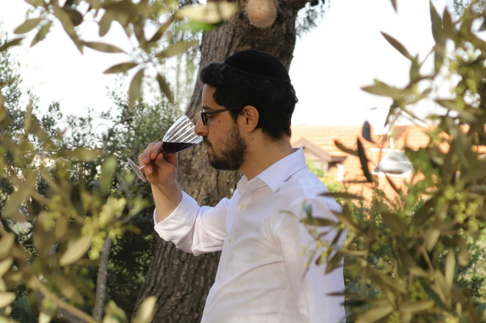

The winemaker
It was a young winemaker and oenologist by the name of Zeev Zyzek who — out of love for the precious, incredible and delicious creations of God, Hashem, and out of his infinite admiration for the in-depth study of the Torah and the Talmud — immersed himself in the sublime wisdom of wine, until, with a great deal of life, joy and love, he made his first wines.